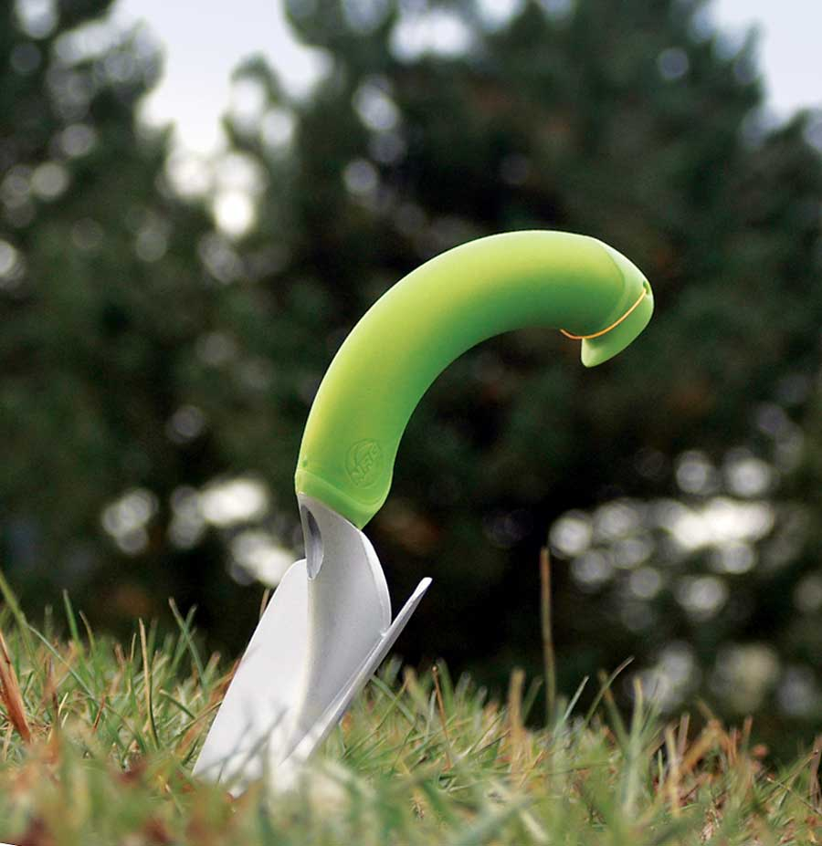
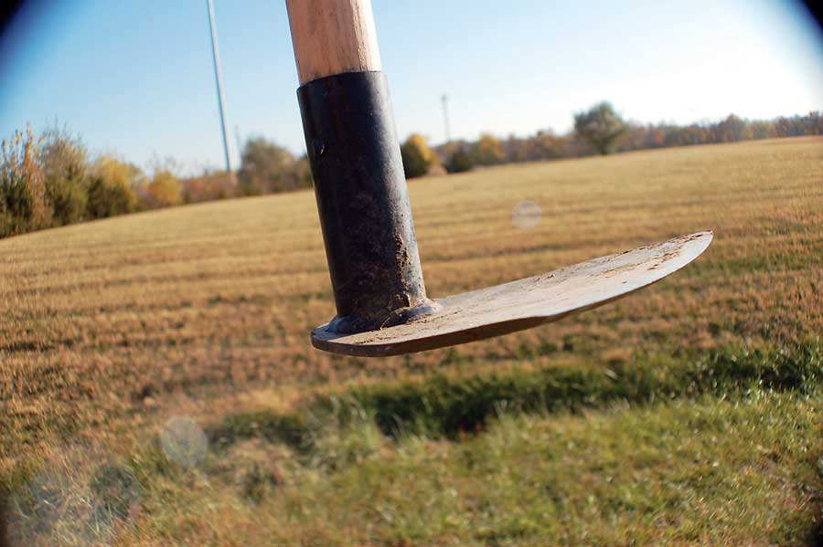
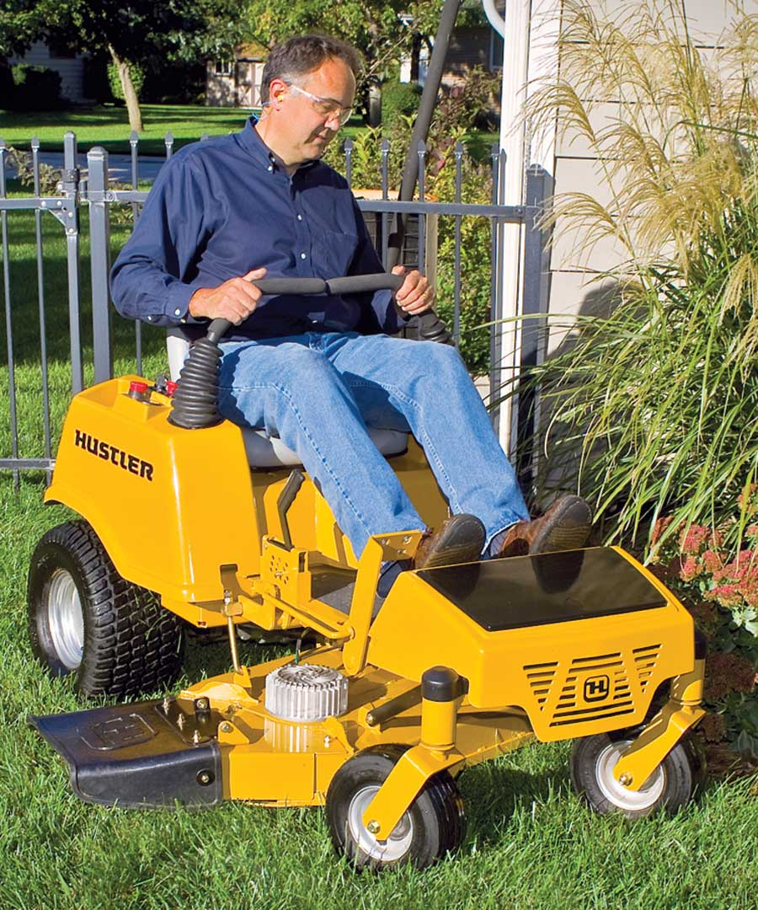

As we all know, there’s a lot of unnecessary, or necessary but poorly made, stuff on the market. To help you sift through the hype and identify products that meet high standards of design, materials and/or function, we’re marking Earth Day 2009 by naming our first three Mother Earth News Tools for Wiser Living.
There’s nothing like a quality hoe to keep weeds in their place. We’ve tested many hoes over the years, and our all-time multipurpose favorites are the Rogue garden and field hoes. Instead of the cheap, lightweight metal used in most commercial hoes, Rogue hoes are handcrafted from high-quality tempered steel made from recycled agricultural disc blades. The blades hold a sharp edge extremely well, and have a slight curve that helps the hoe cut into the soil. These simple, classic hoe designs are offered in several styles and widths, including extra long handles for taller gardeners.
We thought the Rogue Hoes might be too heavy for routine garden weeding, but the extra weight means you don’t have to chop as hard. Some models, such as the 7-inch wide “70G,” do triple duty, easily cutting irrigation ditches and reshaping raised beds.
These hoes are versatile and superbly designed with high quality materials and recycled steel - truly a Tool for Wiser Living. You can order Rogue hoes from sales@roguehoe.com, or call 417-962-5091. Prices start at $26.
We’ve previously reported about the wonderful NRG (natural radius grip) garden trowel, and we still dig it. With a unique curved handle and a rust-proof, lightweight aluminum and magnesium blade, this trowel works better than traditional straight-handled trowels. We like it so much that we sell it. And this year we’re also offering the NRG line of stainless steel long-handled spades, forks and more. Price for the trowel is $12.99; the shovels start at $29.99.
Walk-behind battery-powered electric mowers have been around for a while, and we’ve had our eyes peeled for someone to bring an electric rider into production. Finally, the folks at Hustler Turf in Hesston, Kan., are introducing not just an electric conventional rider, but a snappy zero-turn model. Mother Earth News contributing editor Hank Will was the first journalist to test drive the company’s new Zeon. Here’s his report on our third Tool for Wiser Living:
“‘Wow!’ is about all I can say. The Zeon is a full-fledged zero-turn electric riding mower that is eerily quiet, simple to control, comfortable to operate and doesn’t directly generate a bit of pollution. In addition to the obvious advantages of electric, this mower is simple to maintain. Gone are belts, hydraulic hoses and controls, pulleys, PTO clutches and other bits and pieces that require routine maintenance and adjustment. In their place, the Zeon uses a pair of DC motors to drive the cutting blades directly, and a pair of AC motors to control the drive wheels. Speed and direction are controlled with a pair of levers, as with most zero-turn mowers. Four lead-acid batteries provide the juice. When the mowing is finished, just plug this electric mower into a standard outlet, and it will be ready for work the next time you need it.
The Zeon electric mower is purported to easily mow an acre on a single charge. An integrated battery minder will shut the deck off when the juice gets critically low in order to leave enough energy to bring the mower back to the shed for a recharge.
This 48-volt electric zero-turn riding mower with a 42-inch cut, side-discharge deck is currently priced at about $6,500.”
|
 PEYTON BALDWIN The amazing, ergonomic NRG garden trowel. |
 MATTHEW T. STALLBAUMER Rogue’s hard-working 70G does triple-duty. |
 HUSTLER TURF Hustler Turf’s zippy, zero-turn Zeon electric riding mower easily makes our Tools for Wiser Living list. |